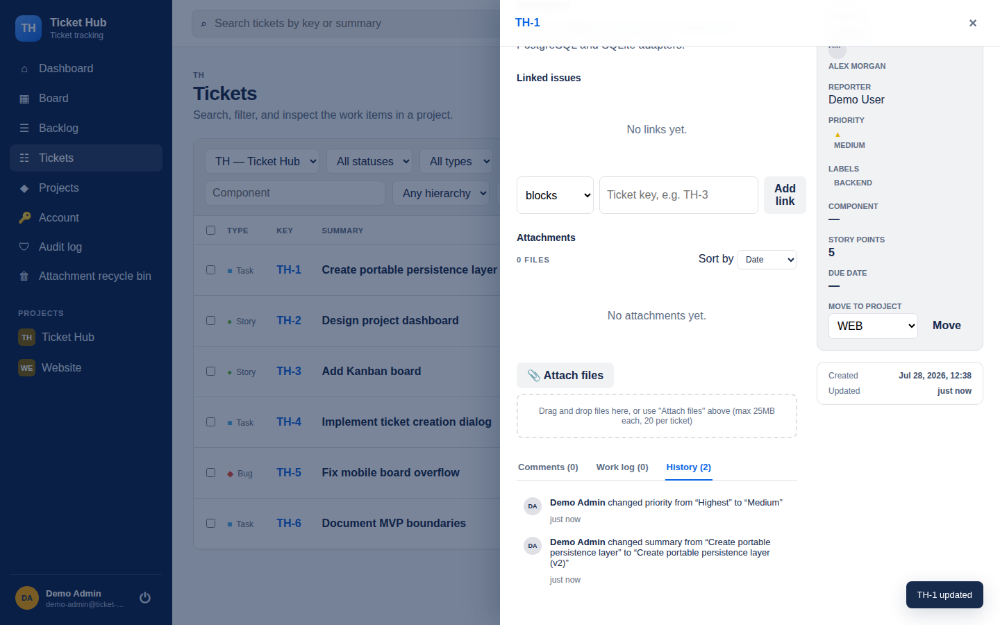
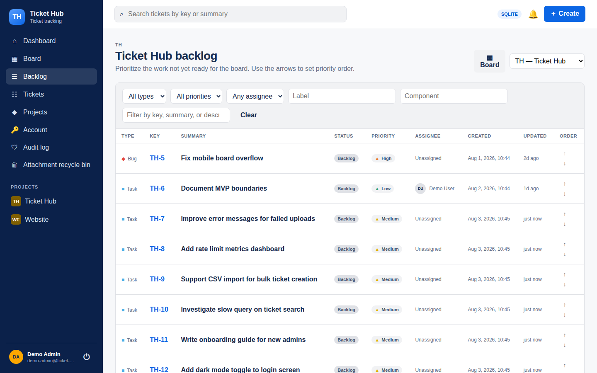

Capture the work
Epics, Stories, Tasks, Bugs, and Sub-tasks follow a clear hierarchy. Markdown descriptions can include attachments, labels, priorities, and due dates.
Open source · self-hosted · MIT
Ticket Hub helps software teams plan work, follow progress, and keep context close. It runs on your infrastructure and stays practical for everyday use.
Built for one team and its software projects. Accounts are created by an administrator.

Everyday work
Create a ticket, add the details, and give the team a shared view of what is happening. Ticket Hub keeps the work and its context together.
Epics, Stories, Tasks, Bugs, and Sub-tasks follow a clear hierarchy. Markdown descriptions can include attachments, labels, priorities, and due dates.
A separate backlog and Kanban board distinguish planned work from tickets that are active, under review, or done.
Comments, mentions, change history, and ticket links preserve context where the work happens.
The full picture
Status, ownership, comments, work logs, and history each have their place. Old ticket keys remain resolvable after a move between projects.

Your infrastructure
Ticket Hub is built for a single self-hosted installation. The supported production path uses Docker Compose with PostgreSQL. SQLite offers the same user-facing features for a single-process setup.
Administrators create accounts, fixed project roles control editing, and the source code is available under the MIT license.
Read the deployment guide →
See the product
Real application screens and a clear account of what it does today.